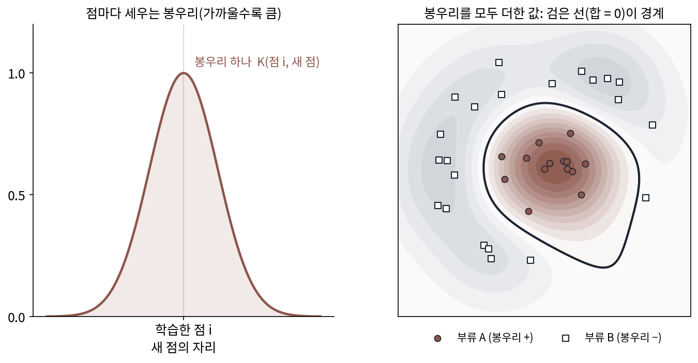
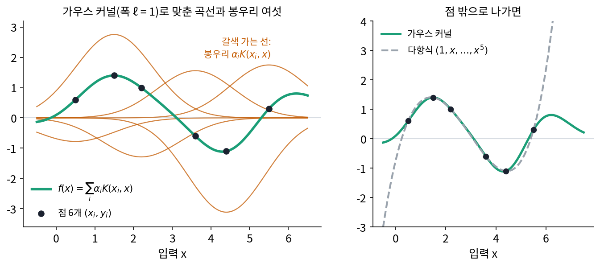
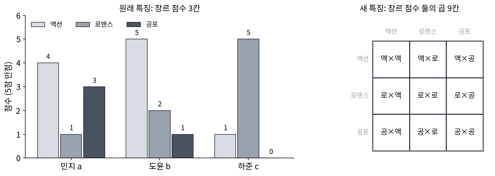
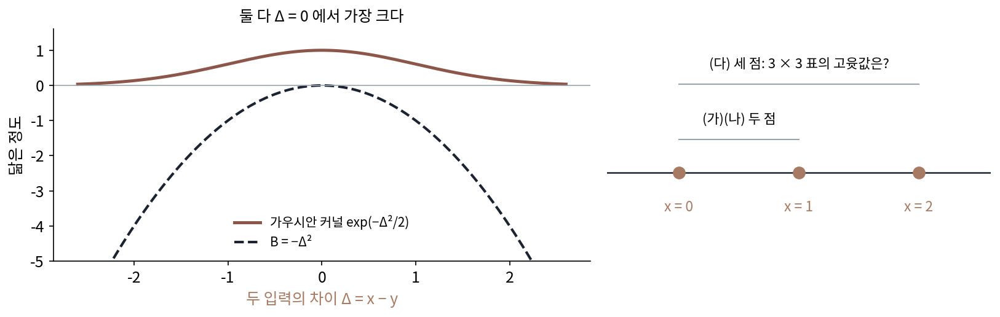
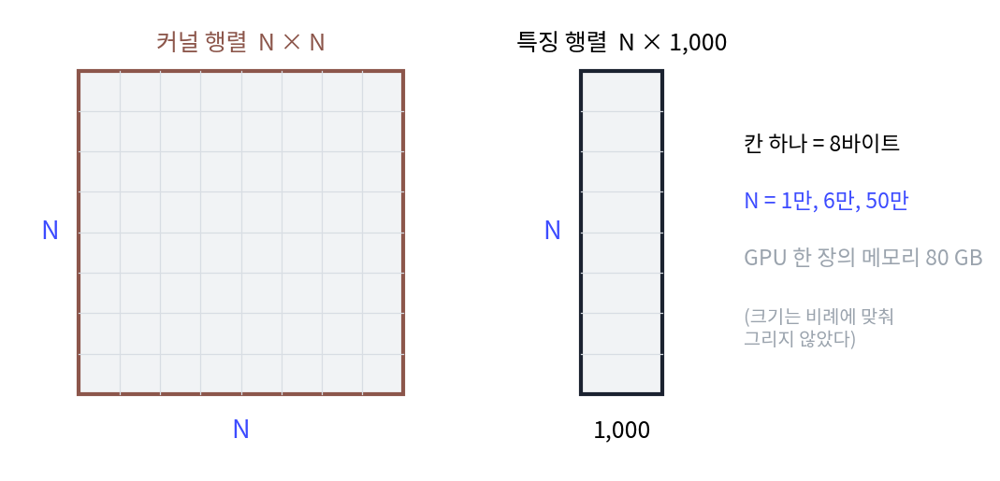

커널: 무한히 많은 물결을 셈 한 번으로
이 장의 물음
지금까지는 축을 미리 정해 두었다. 신호를 사인·코사인 물결의 축에 사영해 계수를 읽고, 계수가 빨리 줄어들면 물결 몇 개로 신호를 거의 다 적었다. 그런데 실험실에서 잰 점 여섯 개만 손에 있고, 그 사이를 매끄럽게 이어야 한다면 어떨까? 직선 하나로는 점들을 지나지 못하고, 물결을 특징으로 몇 개 써서 맞추면 되겠지만 어떤 주파수를 몇 개 써야 할지 모른다. 많이 쓸수록 곡선은 유연해지지만 계산은 무거워지고, 끝없이 많이 쓰면 계산을 할 수 없다.
ML에서도 같은 장면이 나온다. 트랜스포머의 어텐션은 길이 N인 글에서 토큰 둘씩 짝지어 「닮은 정도」를 N × N 개 계산한다. 서포트 벡터 머신은 데이터 점 둘씩의 닮은 정도만 알면 학습할 수 있다고 알려져 있고, 폭이 아주 넓은 신경망의 학습은 입력 둘을 받는 함수 하나로 적힌다는 결과가 있다. 하이퍼파라미터를 고르는 도구들은 몇 번 돌려 본 결과만으로 「다음엔 어디를 돌려 볼까」를 정한다. 넷 모두 입력 둘의 닮은 정도를 재는 함수 하나에 기댄다.
이 장은 다음 물음에 차례로 답한다.
- 특징을 끝없이 많이 쓴 회귀를 셈 몇 번으로 할 수 있을까?
- 두 입력의 닮은 정도를 아무 함수로나 재도 될까? 어떤 함수가 특징의 내적이 될 수 있을까?
- 데이터가 수십만 개라서 닮은 정도를 모은 표가 너무 클 때, 물결 몇 개로 대신할 수 있을까?
- 맞춘 곡선을 점 사이에서 얼마나 믿을 수 있을까? 곡선이 얼마나 출렁일지는 무엇이 정할까?
커널 함수: 특징을 만들지 않고 내적만 계산하기
실험에서 점 여섯 개를 얻었다고 하자.
| 입력 x | 0.5 | 1.5 | 2.2 | 3.6 | 4.4 | 5.5 |
|---|---|---|---|---|---|---|
| 값 y | 0.6 | 1.4 | 1.0 | −0.6 | −1.1 | 0.3 |
직선 a + bx로는 오르다 내렸다 다시 오르는 점들을 지날 수 없을 때 흔한 처방은 입력을 여러 개의 특징으로 펴는 것이다. 특징을 (1, x, x², x³, x⁴, x⁵) 여섯 개로 펴면 계수 여섯 개로 점 여섯 개를 정확히 지나는 곡선이 나온다. 그런데 거듭제곱 특징은 x가 커지면 제멋대로 커지기 때문에, 이 곡선은 점이 끝난 x = 7에서 11.0으로 치솟는다. 특징을 cos ωx, sin ωx 같은 물결로 바꾸면 치솟지는 않지만, 이번에는 주파수 ω(오메가)를 무엇으로 몇 개 고를지가 문제다. 넉넉하게 많이 쓰고 싶은데, 특징이 늘수록 계수도 늘고 계산도 는다.
특징을 쓴 회귀의 답을 들여다보면 실마리가 있다. 점이 특징 수보다 적을 때, 0에서 출발해 경사하강으로 맞춘 계수는 늘 데이터 점들의 특징 벡터를 섞은 꼴로 남는다(가장 짧은 해, 최소 노름 해). 그러면 새 입력 x에서의 예측은 「데이터 점 xᵢ의 특징」과 「x의 특징」의 내적들을 무게 붙여 더한 값이 된다. 계수를 구할 때도 특징 벡터끼리의 내적만 나오고, 특징 벡터 자체는 어디에도 따로 쓰이지 않는다. 그렇다면 특징을 만들지 않고 내적만 바로 계산할 수는 없을까?
역사: 「특징을 곱하자」 대신 「내적을 바꾸자」
내적만 바꿔 끼우는 생각은 1960년대 소련의 패턴 인식 연구에서 나왔다. 아이제르만(Mark Aizerman), 브라베르만(Emmanuel Braverman), 로조노에르(Lev Rozonoer)는 1964년 학술지 『자동화와 원격 제어』에 「패턴 인식 학습에서 퍼텐셜 함수 방법의 이론적 기초」를 실었다. 학습한 점마다 그 둘레에 전기 퍼텐셜 같은 봉우리를 하나씩 세우고, 새 점의 부류를 봉우리들의 합으로 정하는 방법이다. 봉우리 하나의 값은 두 점을 받는 함수였고, 그 함수가 어떤 특징 공간의 내적과 같다는 것이 그들 이론의 바탕이었다.
이 생각이 널리 쓰이게 된 것은 30년쯤 뒤 미국 벨 연구소에서다. 이자벨 가이언(Isabelle Guyon)이 2016년에 남긴 회고에 따르면, 1991년 그들 모임은 블라디미르 뱁닉(Vladimir Vapnik)이 오래 연구해 온 「여백이 가장 큰 경계」 알고리즘을 실제로 돌려 보고 있었다. 가이언과 베른하르트 보저(Bernhard Boser)가 버클리로 옮기기 전에 남은 석 달 동안, 보저가 그 알고리즘을 구현했다. 직선 경계가 어느 정도 통하자 뱁닉은 특징끼리의 곱을 새 특징으로 넣자고 했고, 가이언은 그 대신 퍼텐셜 함수 방법의 「커널 트릭」을 쓰자고 했다. 가이언의 회고에는 뱁닉이 처음에는 이 제안을 꺼렸다고 적혀 있는데, 퍼텐셜 함수 방법을 만든 사람들이 1960년대 러시아 시절 같은 연구소의 경쟁 팀이었기 때문이라고 한다. 결과는 1992년 보저·가이언·뱁닉의 「여백이 가장 큰 분류기를 위한 학습 알고리즘(A Training Algorithm for Optimal Margin Classifiers)」으로 학습 이론 학회 COLT 에 실렸고, 지금 서포트 벡터 머신이라 부르는 방법의 출발점이 되었다. 뱁닉이 하려던 「특징끼리 곱하기」와 가이언이 고른 「내적 바꿔 끼우기」가 어떻게 같은 일인지는 바로 아래 예에서 손으로 확인할 수 있다.


내적 자리에 함수 하나를 바꿔 끼우는 거잖아요. 1964년에 있던 생각을 서포트 벡터 머신에 쓰기까지 30년 가까이 걸렸다는 게 좀 신기해요.

바꿔 끼우려면 먼저 알고리즘 안에 내적이 보여야 해요. 여백이 가장 큰 경계를 구하는 문제를 처음 적으면 무엇이 보이죠?

음, 경계의 방향이랑 점마다 경계까지의 거리요. 점끼리의 내적은 바로 안 보이네요.

그래서 그 문제를 계산 과정에 데이터 점끼리의 내적만 나오는 꼴로 고쳐 써야 바꿔 끼울 자리가 생겨요. 내적 대신 두 점을 받는 함수를 넣어도 된다는 이론은 경쟁하던 다른 팀의 1960년대 논문에 있었고요.

뱁닉은 특징끼리 곱하자고 했죠. 입력이 100칸이면 두 칸씩 곱한 특징만 5,050칸이에요. 석 달 안에 돌려 봐야 하는데 점마다 특징을 5천 칸씩 만들어 곱하는 건 부담이었겠네요.

곱한 특징을 다 만들어 내적한 값이 원래 입력으로 한 번 계산한 값과 똑같이 나오려면, 특징을 어떻게 만들어야 해요?
특징 셋을 셈 한 번으로, 특징 무한 개를 셈 한 번으로
입력 x 하나를 특징 셋 z(x) = (1, √2 x, x²)로 편다고 하자. x = 2와 y = 3이면 z(2) = (1, 2.828, 4), z(3) = (1, 4.243, 9)이고, 두 특징 벡터의 내적은 1 + 12 + 36 = 49다. 그런데 (1 + 2 × 3)² = 7² = 49로 같은 것은 우연이 아니다. (1 + xy)²을 풀면 1 + 2xy + x²y²이고, 세 항이 바로 특징 셋의 곱 1·1, √2x·√2y, x²·y²이다. 특징을 만들어 곱해 더하는 대신 원래 입력의 곱 xy 하나로 셈을 끝낸 것이다. 뱁닉이 제안한 「특징끼리의 곱」을 직접 만들면 특징 수가 거듭제곱으로 늘지만, 그 내적은 원래 입력의 내적을 제곱한 값 하나로 계산된다.
특징이 무한히 많아도 내적을 셈 한 번으로 계산할 수 있다. 두 입력이 가까울수록 1에 가깝고 멀어질수록 0으로 가는 함수 e−(x−y)²/2를 보자. 지수를 풀어 쓰면 e−x²/2 e−y²/2 exy이고, 마지막 exy를 거듭제곱 급수로 펴면 Σ (xy)ⁿ/n!이다. 그러니 이 함수는 특징 zₙ(x) = e−x²/2 xⁿ/√n! (n = 0, 1, 2, …)를 끝없이 늘어놓은 벡터 둘의 내적과 같은데, 특징을 앞에서부터 몇 개만 쓰면 얼마나 맞을까?
| 쓴 특징 수 | x = 0.5, y = 1.5 | x = 2, y = 3 |
|---|---|---|
| 1 | 0.2865 | 0.0015 |
| 3 | 0.5820 | 0.0376 |
| 5 | 0.6059 | 0.1729 |
| 8 | 0.6065 | 0.4512 |
| 12 | 0.6065 | 0.5943 |
| 20 | 0.6065 | 0.6065 |
| 참값 e−(x−y)²/2 | 0.6065 | 0.6065 |
두 쌍은 거리가 1로 같아서 참값도 0.6065로 같은데, 원점에서 먼 쌍(2와 3)은 특징을 20개 써야 참값에 닿는다. 어떤 개수에서 끊어도 어딘가에는 맞지 않는 쌍이 남지만, 지수 함수 한 번이면 특징 무한 개의 내적을 정확히 계산한다.
이렇게 두 입력을 받아, 어떤 특징 벡터 둘의 내적과 같은 값을 돌려주는 함수를 커널 함수 (특징을 만들지 않고 계산하는 내적 / kernel function)라 한다. 이 책에는 칸마다 곱해 더하는 「합성곱 커널」도 나오므로, 두 입력의 닮은 정도를 재는 함수는 늘 「커널 함수」라고 부른다. 위에서 본 e−(x−y)²/2에 폭 ℓ을 넣은 것을 가우시안 커널이라 한다. 커널 함수를 쓰면 특징으로 하던 회귀가 아래처럼 바뀐다.
맞춘 곡선은 데이터 점마다 세운 봉우리 αᵢK(xᵢ, x)의 합이어서, 아이제르만의 퍼텐셜 봉우리와 같은 그림이 된다. 계수 α는 데이터 점 둘씩 넣은 커널 함수의 값을 모은 N × N 표 하나로 정해지는데, 이 행렬을 커널 행렬이라 부른다. 특징이 몇 개든, 무한 개든, 풀어야 할 연립방정식은 N개짜리다.
점 여섯 개를 가우시안 커널(폭 ℓ = 1)로 풀어 보자. 커널 행렬의 첫 줄은 1, 0.607, 0.236, 0.008, 0.000, 0.000이다. 첫 점(x = 0.5)은 1.5와는 꽤 닮았고(0.607) 3.6 너머와는 거의 닮지 않았다. 연립방정식을 풀면 계수는 α = (−0.778, 2.754, −1.288, 1.559, −3.113, 1.748)이고, 곡선은 여섯 점을 정확히 지난다. 점 사이 x = 2.9에서 f = 0.251, 점이 끝난 x = 7에서 0.466이고, x = 10까지 가면 0.0001로 0에 붙는다. 봉우리가 모두 데이터 점 근처에만 서 있으니, 데이터에서 멀어지면 곡선이 0으로 내려앉는다. 거듭제곱 특징처럼 치솟지 않는다.

폭 ℓ은 「얼마나 떨어지면 닮지 않았다고 볼까」를 정한다. ℓ = 0.3이면 점끼리 거의 닮지 않아 커널 행렬이 단위 행렬에 가깝고, 계수가 값과 거의 같으며(α₁ = 0.595), 곡선은 점 사이에서 0으로 꺼졌다 올라온다(f(2.9) = 0.023). ℓ = 3이면 모든 점이 서로 닮아 커널 행렬이 거의 겹친 줄들로 차고, 계수가 수천 단위로 커진다(가장 큰 것 7,899). 위젯에서 폭을 바꿔 봉우리들이 어떻게 서로 지우며 곡선을 만드는지 보자.
ML에서: 서포트 벡터 머신과 최소 노름 해
보저·가이언·뱁닉의 서포트 벡터 머신은 여백이 가장 큰 경계를 구하는 문제를 계산 과정에서 데이터 점끼리의 내적만 나오는 꼴로 바꾼 뒤, 그 내적을 커널 함수로 바꿔 끼웠다. 그래서 직선 경계를 구하는 알고리즘이 그대로 곡선 경계를 구한다. 특징을 쓴 선형 모델을 0에서 출발시켜 경사하강으로 학습해도 답이 데이터 점끼리의 내적으로만 적힌다. 계수가 늘 데이터 점들의 특징을 섞은 꼴로 남으므로, 학습이 끝난 모델은 커널 함수로 푼 연립방정식의 답과 같다.
문제 1. 영화 취향을 장르 쌍으로 비교하기
세 사람이 액션, 로맨스, 공포 영화를 얼마나 좋아하는지 5점 만점으로 매겼다. 민지 a = (4, 1, 3), 도윤 b = (5, 2, 1), 하준 c = (1, 5, 0). 「두 장르를 함께 좋아하는 정도」를 보려고, 장르 점수 둘을 곱한 값 9개(액션×액션, 액션×로맨스, …, 공포×공포)를 새 특징으로 만든다. (가) 민지와 도윤의 9칸 특징의 내적을 구하라. (나) 원래 점수의 내적 a·b 와 비교하라. (다) 이 9칸 특징으로 재면 도윤은 민지와 하준 가운데 누구와 더 닮았는가? (라) 장르가 10개이고 셋씩 곱한 특징을 쓴다면 특징은 몇 칸이고, 내적을 지름길로 계산하려면 무엇을 하면 되는가?

(가)는 그냥 다 만들어서 곱하면 돼요. 민지는 (16, 4, 12, 4, 1, 3, 12, 3, 9), 도윤은 (25, 10, 5, 10, 4, 2, 5, 2, 1)이고, 칸끼리 곱해 더하면 400 + 40 + 60 + 40 + 4 + 6 + 60 + 6 + 9 = 625예요.
맞아요. (나)는요? a·b 는 얼마죠?
20 + 2 + 3 = 25요. 625랑은 전혀 다른데요.

25의 제곱이 625야. 9칸을 곱해 더한 건 (a₁b₁ + a₂b₂ + a₃b₃)을 제곱해서 펼친 항들이랑 하나씩 같아. aᵢaⱼ × bᵢbⱼ = (aᵢbᵢ)(aⱼbⱼ)니까.

그래요. 9칸을 만들지 않아도 원래 점수의 내적을 한 번 계산해서 제곱하면 돼요. (다)는요?
도윤과 하준은 b·c = 5 + 10 + 0 = 15라 제곱하면 225, 민지와 도윤은 625예요. 민지랑 더 닮았네요.
(라)는 10 × 10 × 10 = 1,000칸이야. 지름길은 원래 점수 10칸으로 내적을 한 번 구하고 세제곱하는 거고. 곱셈 열 번이면 끝나.

조별 과제 조원 둘의 시간표를 칸마다 맞춰 보는 대신 겹치는 시간 총합만 알면 되는 거랑 비슷하네요. 표를 다 만들 필요가 없어요.
문제 2. 닮은 정도를 거리의 마이너스로 재면
닮은 정도를 「가까울수록 크다」는 뜻에서 B(x, y) = −(x − y)² 로 재기로 하고, 커널 함수처럼 이것으로 회귀를 하려고 한다. (가) 두 점 x = 0, 1 의 2 × 2 표 B 를 적어라. (나) B(x, y) 가 어떤 특징 벡터 z 의 내적 z(x)·z(y) 와 같을 수 있는가? (다) 세 점 0, 1, 2 에서 가우시안 커널 행렬과 B 의 고윳값을 비교하라.

(가)는 대각이 0이고 나머지가 −1이에요. 가까울수록 크게 재니까 뜻은 그럴듯한데요. 특징은 (나)… 하나 지어 보면 되지 않을까요?
B(0, 0) = 0이에요. B(0, 0)이 z(0)·z(0)이라면 z(0)은 어떤 벡터죠?
자기 자신과의 내적이 0이면 길이가 0이니까 z(0)은 영벡터예요. 그러면 z(0)·z(1)도 0이어야 하는데 B(0, 1)은 −1이에요. 안 되네요.

다른 쪽으로도 볼 수 있어. 내적이라면 z(0) + z(1)의 길이 제곱은 B(0,0) + 2B(0,1) + B(1,1) = −2가 돼. 길이 제곱이 음수인 벡터는 없어. 표 B의 고윳값이 −1과 1이라서, 고윳값이 −1인 방향 (1, 1)로 섞으면 음수가 나오는 거야.
그래요. 어떤 점들을 골라 섞어도 길이 제곱이 0 이상이어야 하니, 커널 행렬의 고윳값은 모두 0 이상이어야 해요. (다)는요?
세 점에서 B의 고윳값은 −4.449, 0.449, 4이고, 가우시안 커널 행렬은 0.207, 0.865, 1.928로 모두 양수예요.
「닮은 정도」라는 뜻만으로는 커널 함수가 되지 않아요. 그럼 어떤 함수가 되는지는 점을 몇 개 골라 고윳값을 볼 수밖에 없을까요? 점을 고르는 방법은 끝이 없는데요.

선형대수 시간에 「모든 벡터 v에 대해 vᵀAv ≥ 0」인 행렬을 따로 이름 붙였던 게 이거였어. 그걸 점을 어떻게 골라도 성립하게 하려면 함수 쪽에 조건이 있어야겠네.
문제 3. 커널 행렬은 얼마나 큰가
커널 행렬의 칸 하나를 8바이트(64비트 실수)로 저장한다. (가) 데이터 점이 N = 1만, 6만, 50만 개일 때 커널 행렬은 몇 GB 인가? (나) 커널 함수 대신 특징 1,000개를 직접 만들어 N × 1,000 행렬로 둔다면? (다) 연립방정식을 푸는 곱셈 수는 대략 N³/3, 특징 1,000개로 하는 회귀는 대략 N × 1,000² 이다. N = 50만에서 비교하라.

(가)는 N² × 8바이트니까 1만이면 0.8 GB, 6만이면 28.8 GB요. 50만이면… 요즘 GPU 메모리가 80 GB니까 어떻게든 되지 않을까요?
50만의 제곱에 8을 곱해 봐요.

2.5 × 10¹¹ × 8 = 2 × 10¹²바이트, 2,000 GB예요. GPU 스물다섯 장에도 안 들어가요. (나)는 50만 × 1,000 × 8 = 4 GB고요.
(다)도 차이가 커. N³/3은 4.2 × 10¹⁶이고 N × 10⁶은 5 × 10¹¹이야. 8만 배가 넘어. N이 열 배가 되면 커널 행렬 쪽은 천 배, 특징 쪽은 열 배로 늘고.
점 여섯 개일 때는 커널 함수가 특징 무한 개를 셈 한 번으로 바꿔 줬어요. 점이 50만 개가 되면 무엇 때문에 계산이 무거워지죠?

이번에는 점 수 때문에 무거워져요. 커널 함수는 특징이 몇 개든 상관없게 해 주는 대신, 점 둘씩의 표를 다 만들어야 하니까요. 점이 많으면 거꾸로 특징을 적당히 몇 개만 만들어 N × (특징 수) 행렬로 푸는 편이 낫겠네요.

그런데 가우시안 커널은 특징이 무한 개라서 몇 개만 고를 수가 없잖아요. 앞에서부터 끊으면 원점에서 먼 점이 틀렸고요. 다른 방법으로 몇 개를 골라야겠어요.